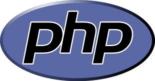

THE CHALLENGE
Governments are increasingly making data available in open formats for developers to use. That's awesome!.
But often, the data that is available differes from one city to the next - different formats, different data structures, different naming conventions....
If open government data is going to be the fuel for a new breed of startups, we need to find ways to quickly and easily combine open data and synch it to a common format. Making open data easier to use across different cities will truly unlock the business potential of this important resource.
THE SOLUTION
Project Open Synch helps address the problems associated with disparate formats and data structures across different government data sets.
Upload
Upload your data in a variety of common formats.

Synchronize
Use filters to synch your data to a common data structure.
Write filters in the language you love best.
- 
Utilize
Access all your data through a simple to use, well documented REST API.
THE VISION
Project Open Synch will is currently in active devleopment, with the goal of being released for the next Startup Weekend event in Philadelphia - currently scheudled for April 2013.
FAQ
- What is open government data? "Open government" refers to the practice of governments releasing data sets in open formats for developers to use.
- That's sounds awesome. What's the problem? It is awesome. The only issues is that the data format and structure from various governments can differ - sometimes significantly. It can be tedious and boring to convert disparate data sets to a commont structure and provision and API to build an app against. The easier it is to do these things, the more liekly people are to use open data.
- How does Project Open Synch help? The project is intended to make it as easy as possible to convert data from different sources to a common structure, so that developers can easily build great apps using open government data.
- How can I get invovled? Send me an e-mail.